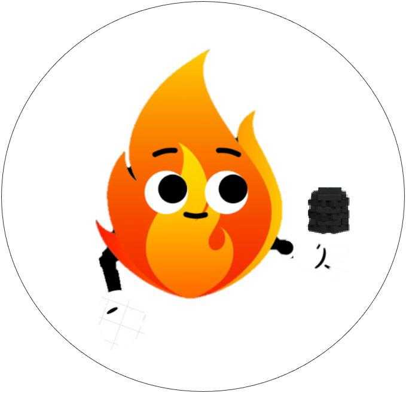
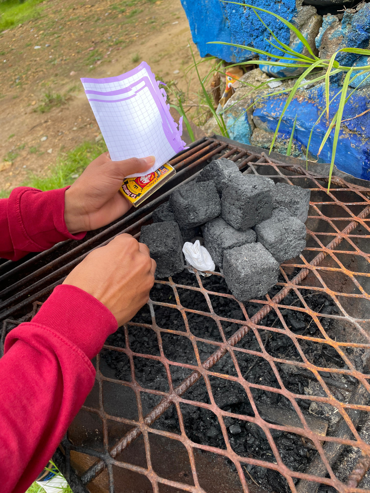
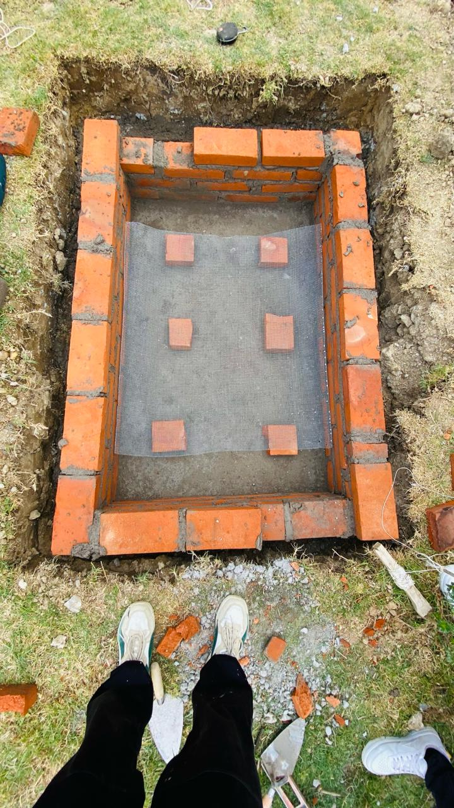
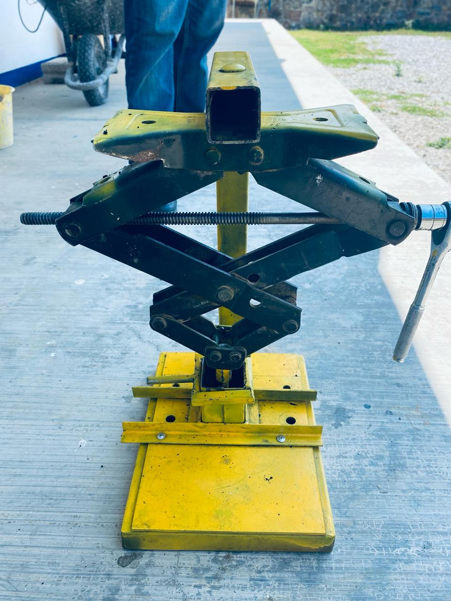
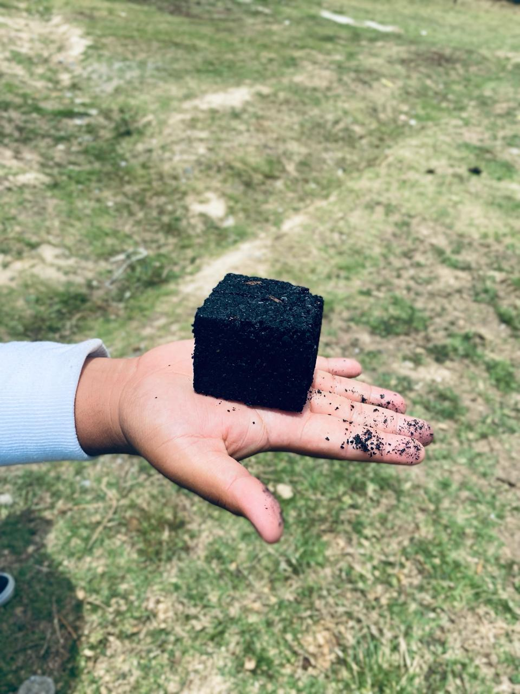
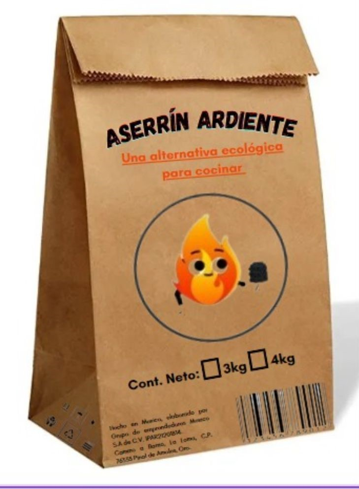

¡Sin lugar a dudas, será tu preferido en las asadas!
No te conformes con menos. ¡Compra nuestro carbón hoy mismo!
Está hecho de residuos de madera de varios aserraderos y carpinterías en el Municipio de Pinal de Amoles.
Perfecto para las cocinas convencionales y cocinar al aire libre, con sus 5 cm x 5 cm x 8 cm, es perfecto para poder usarlo. Además, tiene una muy buena duración de encendido.
El horno se realizó con las medidas de 90 cm de ancho, 140 cm de largo y 60 cm de profundidad con el propósito de poder producir carbón para dos bolsas simultáneamente.
Aproximadamente se quema alrededor de 15 a 20 kg de aserrín en el horno que se construyó.